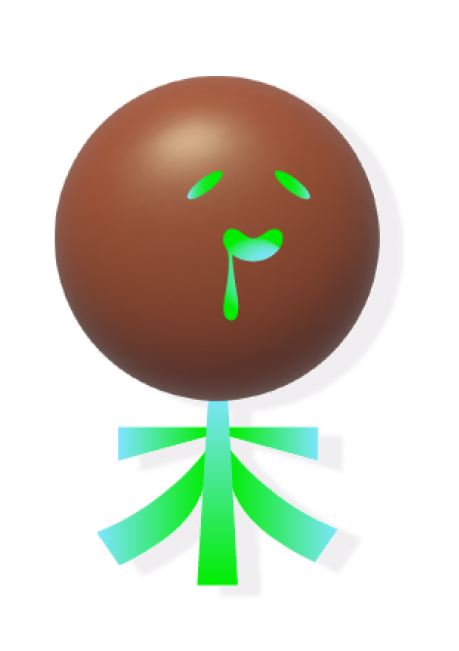

Great Job! You created...


DULL
The Chinese character '呆' primarily conveys the meaning of being 'dull,' 'stupid,' or 'sluggish.' It can be used to describe someone who is slow to understand or react, or someone who appears to be in a state of mental inactivity or dullness. In some contexts, it may also imply naivety or simplicity in a person's behavior or thinking.